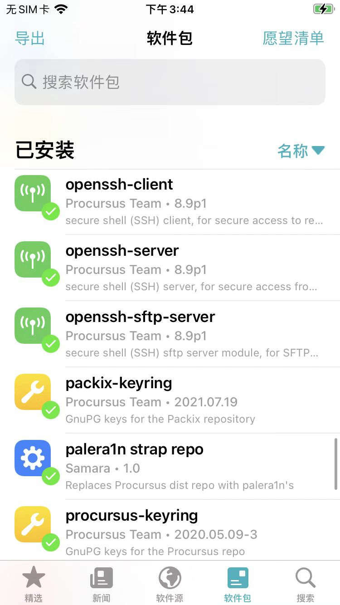

palera1n越狱后
ssh可以直接使用
因为已自动安装了对应OpenSSH的相关插件：
- openssh-client
- openssh-server
- openssh-sftp-server

初始化ssh环境
第一次连接：
ssh root@192.168.2.13
- 说明
192.168.2.13：你的iPhone的IP- 和你的Mac使用同一个WiFi(网络)
输入：yes
再输入（OpenSSH的默认）密码：alpine
ssh免密登录
ssh-copy-id root@192.168.2.13
输入密码，即可：
-》之后每次直接连接：
ssh root@192.168.2.13
而无需密码。
能看到palera1n的进程
Mac中通过frida-ps查看的：
crifan@licrifandeMacBook-Pro ~/dev/dev_tool/reverse_security/iOS/Filza/dep_tools frida-ps -U
PID Name
---- ------------------------------------------------------------
...
1660
Sileo
2113
palera1n
2118
信息
...
常见问题
缺少常用解压缩工具
现象：palera1n越狱后，没有自动安装常用的解压缩工具(插件)，即zip unzip gzip unrar p7zip bzip2等等，需要自己去安装
解决办法：
有2种方式：
- 手动找到对应的deb地址，并下载得到deb文件，自己手动用dpkg安装
- 去哪里找deb地址？
- 去这里：
- 贴出部分deb地址
- zip
- unzip
- gzip
- unrar
- p7zip
- bzip2
- 如何安装？
- 去iPhone中安装
- Mac通过ssh登录iPhone，或进入iPhone中的终端
- 安装命令
- dpkg -i xxx.deb
- 去iPhone中安装
- 去哪里找deb地址？
- Sileo中，找到对应的软件源，添加软件源，搜索对应插件，去安装
- （包含这些解压缩工具的）软件源的地址：
palera1n越狱后，重启丢失越狱，如何恢复越狱
palera1n -f
继续按照提示操作即可，和第一次越狱的步骤类似。
- 核心步骤：
- Enter回车键
- 给iPhone进入DFU模式
- Hold volume down + side button (0)
- Hold volume down button (3)
- 如何判断恢复越狱成功？
- palera1n的图标正常 + 进入palera1n后没有
Install按钮- 表示已成功恢复越狱
- palera1n的图标正常 + 进入palera1n后没有